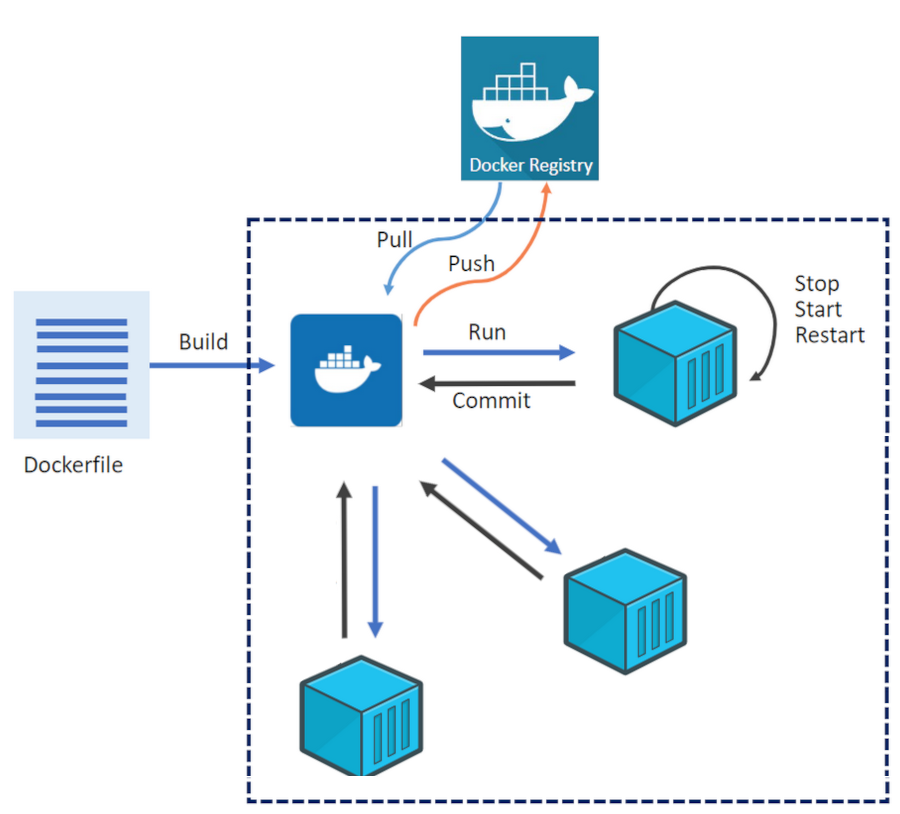
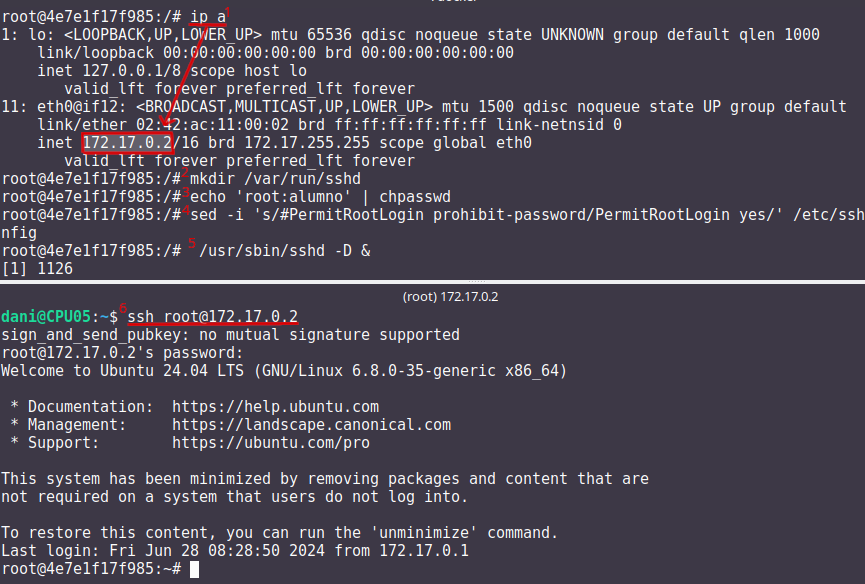
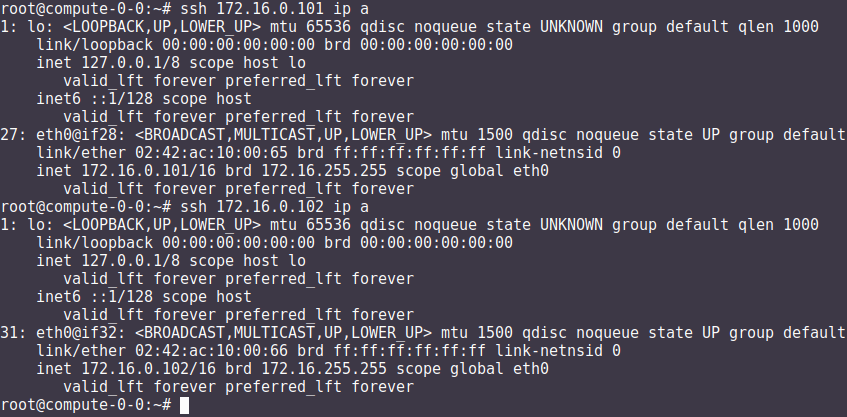

Docker#
Docker es una plataforma de código abierto en la que se usan contenedores que permite empaquetar, distribuir y ejecutar aplicaciones en entornos aislados
A diferencia de las máquinas virtuales, los contenedores comparten el kernel del sistema operativo subyacente y solo virtualizan los recursos a nivel de aplicación, lo que los hace más ligeros y rápidos.
Componentes principales
Imagen: Plantilla de solo lectura que contiene el sistema operativo, el entorno de ejecución y la aplicación.
Contenedor: Instancia en ejecución de una imagen.
Docker Engine: Motor que gestiona los contenedores, incluida la creación, ejecución y eliminación.
Dockerfile: Archivo de texto que contiene las instrucciones para construir una imagen.
Dockerfile y construcción de imágenes
Un Dockerfile especifica cómo se debe ensamblar una imagen.
Se utiliza el comando
docker buildpara construir una imagen a partir de un Dockerfile.
Docker Hub
Registro público de imágenes Docker donde puedes encontrar imágenes preconstruidas para muchas aplicaciones y sistemas operativos.
Redes y volúmenes
Docker permite la creación de redes virtuales para conectar contenedores entre sí.
Los volúmenes permiten persistir datos más allá del ciclo de vida de un contenedor.
Orquestación de contenedores
Herramientas como Docker Swarm y Kubernetes permiten gestionar y escalar grandes clústeres de contenedores.
Tipos de redes
Bridge (puente)
Es la red predeterminada en Docker.
Permite la comunicación entre los contenedores en el mismo host.
Cada contenedor tiene su propia dirección IP en la subred de la red puente.
Útil para aplicaciones que se ejecutan en un solo host y necesitan comunicarse entre sí.
Host (anfitrión)
Los contenedores comparten el espacio de red con el host.
No hay aislamiento de red entre los contenedores y el host.
Los contenedores pueden acceder a los mismos puertos que el host.
Proporciona un mejor rendimiento en comparación con las redes puente para aplicaciones que necesitan acceder a recursos del host.
Overlay (superposición)
Permite la comunicación entre contenedores en hosts diferentes en un clúster de Docker Swarm.
Utiliza la tecnología de redes de superposición para conectar contenedores en diferentes hosts.
Proporciona una red virtualizada única para el clúster, independiente de la infraestructura subyacente.
Macvlan
Asigna una dirección MAC única a cada contenedor, lo que los hace aparecer como dispositivos físicos en la red.
Los contenedores tienen su propia dirección IP en la red física.
Útil para integrar contenedores en redes existentes que dependen de la comunicación a nivel de capa 2.
None (ninguna)
No se asigna ninguna red al contenedor.
Útil para contenedores que no necesitan acceso de red en absoluto.
Gestión de imágenes y contenedores#
docker build: construir una imagen a partir de un Dockerfile.docker tag: Etiquetamos la imagen.docker push: Subimos la imagen.docker pull: Descarga una imagen de Docker Hub u otro repositorio.docker images: lista las imágenes.docker rmi: Elimina una imagen.docker run: Crea y ejecuta un contenedor a partir de una imagen.docker ps: Muestra los contenedores en ejecución.docker ps -a: Muestra todos los contenedores.docker exec -it compute-0-0 /bin/bash: Acceder a una shell Bash dentro de un contenedor.docker stop/docker start: Detiene o inicia un contenedor.docker commit: Guarda los cambios de un contenedor en la imagen.docker rm: Elimina un contenedor.
Caso práctico: construir una imagen de docker y subirla al repositorio#
Lo primero que haremos es darnos de alta en Docker Hub es un repositorio de imágenes de contenedores público y centralizado, donde los usuarios pueden:
Almacenar y compartir imágenes de contenedores
Descubrir imágenes de contenedores
Colaborar en proyectos
Automatizar flujos de trabajo
Para construir una imagen de Docker, necesitamos crear el archivo Dockerfile, veamos el siguiente para construirnos una imagen de Ubuntu 24.04:
# Usar Ubuntu 26.04 como imagen base
FROM ubuntu:26.04
# Actualizar los repositorios y paquetes
RUN apt-get update && apt-get upgrade -y
Las instrucciones más comunes en un Dockerfile:
FROM: Define la imagen base desde la cual se construirá la nueva imagen.
COPY o ADD: Copian archivos o directorios desde el sistema de archivos del host al sistema de archivos del contenedor.
RUN: Ejecuta comandos en el contenedor durante la fase de construcción.
WORKDIR: Establece el directorio de trabajo para las instrucciones RUN, CMD, ENTRYPOINT, COPY y ADD.
CMD: Especifica un comando que se ejecuta cuando se inicia un contenedor.
ENTRYPOINT: Configura un contenedor para que se ejecute como un ejecutable.
EXPOSE: Indica que el contenedor escucha en puertos específicos en tiempo de ejecución.
ENV: Establece variables de entorno.
Construimos la imagen:
docker build -t ubuntu:26.04 .
Etiquetamos la imagen:
docker tag ubuntu:26.04 dgtrabada/ubuntu:26.04
Para subir la imagen, primero iniciar sesión en Docker Hub y luego la subimos push:
docker login
docker push dgtrabada/ubuntu:26.04
Vamos a instalar el editor vim y la actualizamos:
#Listar imágenes:
$ docker images
IMAGE ID DISK USAGE CONTENT SIZE EXTRA
dgtrabada/ubuntu:26.04 619a114072f4 264MB 80.9MB
#Creamos un nuevo contenedor
docker run -it dgtrabada/ubuntu:26.04 /bin/bash
#instalamos el editor vim
root@2e9067d8c411:/# apt-get install -y vim
#nos salimos del contenedor (Ctrl+d)
#listamos los contenedores:
$ docker ps -a
CONTAINER ID IMAGE COMMAND CREATED STATUS
2e9067d8c411 dgtrabada/ubuntu:26.04 "/bin/bash" About a minute ago Exited (0)
#mandamos los cambios a la imagen
$ docker commit 2e9067d8c411 dgtrabada/ubuntu:26.04
sha256:eb5c8844fc747851d08fd5fa22f0bfceb98502cd949d8b2d31c9c361e2e41533
#subimos la imagen a Docker Hub
$ docker push dgtrabada/ubuntu:26.04
Para ejecutar este contenedor en cualquier otro ordenador con docker lo único que tenemos que hacer es:
#Se bajará la imagen
$ docker pull dgtrabada/ubuntu:26.04
#Crear un nuevo contenedor
docker run -it dgtrabada/ubuntu:26.04 /bin/bash


Caso práctico: Instalar servidor de ssh, ip y ping#
Nos bajamos la imagen del repositorio, creamos un contenedor e instalamos los comandos:
root@f11caab2ee73:/# apt update
root@f11caab2ee73:/# apt-get install -y iproute2 iputils-ping
root@f11caab2ee73:/# apt-get install -y openssh-server
Configuramos ssh para poder iniciar sesión como root:
root@f11caab2ee73:/# mkdir /var/run/sshd
root@f11caab2ee73:/# echo 'root:alumno' | chpasswd
root@f11caab2ee73:/# sed -i 's/#PermitRootLogin prohibit-password/PermitRootLogin yes/' /etc/ssh/sshd_config
#Por último lanzamos el demonio sshd y ya puedes conectarte por ssh
root@f11caab2ee73:/# /usr/sbin/sshd -D &

Salimos del contenedor y mandamos los cambios a la imagen
$ docker commit 2e9067d8c411 dgtrabada/ubuntu:26.04
sha256:4e8ab55280e13f6bcaa6eeb0065596375ff6a0418ddc53d150afd1f4ecac7d7b
#subimos la imagen a Docker Hub
$ docker push dgtrabada/ubuntu:26.04
#podemos lanzar el sshd del contenedor con:
docker exec -it f11caab2ee73 /usr/sbin/sshd
Fíjate que podríamos haber hecho lo mismo con el siguiente Dockerfile:
# Usar Ubuntu 26.04 como imagen base
FROM ubuntu:26.04
# Actualizar los repositorios y paquetes
RUN apt-get update && apt-get upgrade -y
# Instalamos
RUN apt-get install -y vim iproute2 iputils-ping openssh-server
RUN mkdir /var/run/sshd
# Cambiar la contraseña del usuario root
RUN echo 'root:alumno' | chpasswd
# Permitir el acceso por SSH al root
RUN sed -i 's/#PermitRootLogin prohibit-password/PermitRootLogin yes/' /etc/ssh/sshd_config
Caso práctico: Contenedores en una misma subred#
docker tiene por defecto 3 redes
root@UStunombre:~# docker network ls
NETWORK ID NAME DRIVER SCOPE
e6ab6d5cdeea bridge bridge local
a39dbd6d158e host host local
1092da8fd7e1 none null local
Vamos a crear una nueva subred llamada red16, que por defecto se creará en modo bridge:
docker network create --subnet=172.16.0.0/16 red16
Crearemos un contenedor con ip 172.16.0.100 llamado compute-0-0
#primero lo creamos
docker run -it --network red16 --ip 172.16.0.100 --hostname compute-0-0 --name compute-0-0 dgtrabada/ubuntu:24.04 /bin/bash
#Para lanzar el contenedor:
docker start compute-0-0
#levantamos el servidor ssh
docker exec -it compute-0-0 /usr/sbin/sshd -D &
Hacemos lo mismo para compute-0-1 compute-0-2, con ips 172.16.0.101 y 172.16.0.102, lanza los tres contenedores [1] y haz que se pueda acceder por ssh sin contraseña desde compute-0-0 a compute-0-1 y compute-0-2

Footnotes
docker-compose.yml#
Docker Compose es una herramienta que permite definir y gestionar aplicaciones de múltiples contenedores de Docker, usa un archivo YAML para definir los servicios, redes y volúmenes que necesita tu aplicación, y luego usar un solo comando para crear e iniciar todos estos servicios.
Típicamente contiene varias secciones importantes:
Version: Define la versión del formato de archivo de Docker Compose.
Services: Define los servicios (contenedores) que forman parte de tu aplicación.
Networks (opcional): Define las redes personalizadas que se utilizarán.
Volumes (opcional): Define los volúmenes personalizados que se utilizarán para almacenar datos.
En los ejemplos anteriores podríamos levantar las tres máquinas con el siguiente docker-compose.yml ejecutando docker-compose up -d, para este ejemplo tienes que tener red16 ya creada
services:
compute-0-0:
image: ubuntu:26.04
container_name: compute-0-0
hostname: compute-0-0
command: sleep infinity
networks:
red16:
ipv4_address: 172.16.0.10
compute-0-1:
image: ubuntu:26.04
container_name: compute-0-1
hostname: compute-0-1
command: sleep infinity
networks:
red16:
ipv4_address: 172.16.0.11
compute-0-2:
image: ubuntu:26.04
container_name: compute-0-2
hostname: compute-0-2
command: sleep infinity
networks:
red16:
ipv4_address: 172.16.0.12
networks:
red-tunombre:
driver: bridge
ipam:
config:
- subnet: 172.16.0.0/16